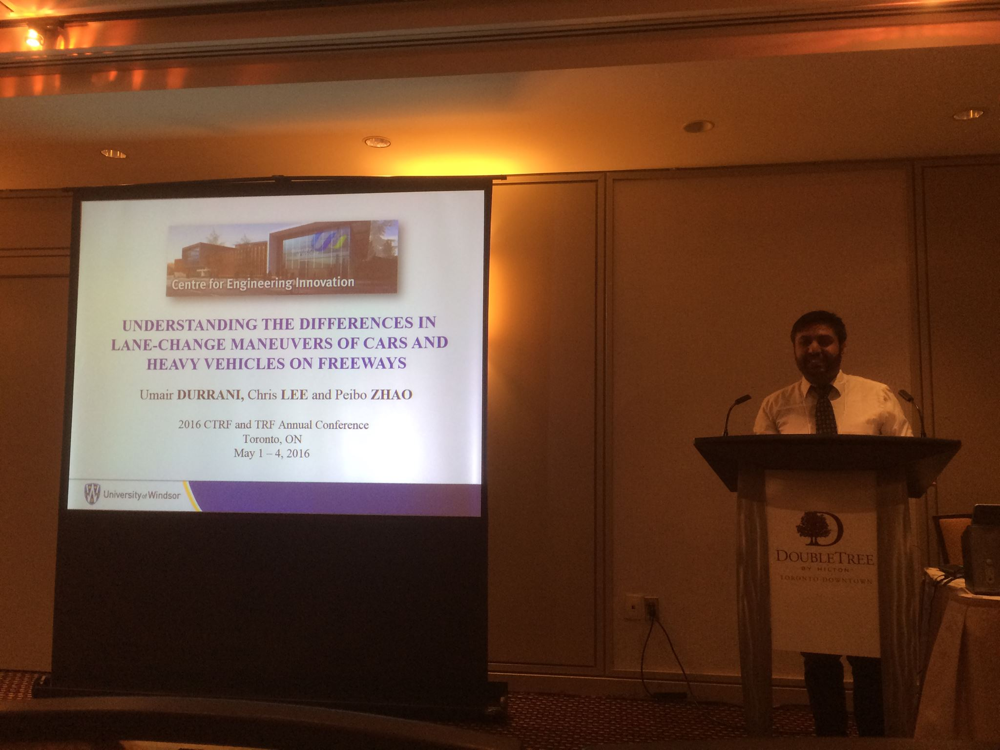

Download CV
Current Projects
Investigation of driver characteristics and vehicle dynamics in car-following and lane-change on freeways using a driving simulator.
Publications
- Durrani, U., Lee, C. and Maoh, H., (2016). Calibrating the Wiedemann’s vehicle-following model using mixed vehicle-pair interactions. Transportation Research Part C: Emerging Technologies, 67, pp.227-242.
Conferences
- Durrani, U., Lee, C., and Zhao, P. (2016) Understanding the differences in lane change maneuvers of cars and heavy vehicles on freeways. Oral presentation at 51st annual national conference, Canadian Transportation Research Forum.
- Kamran, M., Batool, Z., and Durrani, U., (2015). Development of relationship between urban form and public transport usage in Lahore and Neighboring cities. Oral presentation at University of Management and Technology, National Multidisciplinary Engineering Conference 2015, Lahore, Pakistan.
- Kamran, M., Batool, Z., and Durrani, U., (2015). An Investigation of Urban form in Lahore and neighboring cities. Oral presentation at Pakistan Urban Forum 2015, Lahore, Pakistan.
- Durrani, U., Lee, C., and Maoh, H. (2014) Understanding Differences between Car and Truck Movements on Freeways using Vehicle Trajectory Data. Oral presentation at 49th annual national conference, Canadian Transportation Research Forum.

Teaching Assistance
- Engineering Software Fundamentals (MATLAB)
- Transportation and Traffic Engineering
- Numerical Analysis for Engineers (MATLAB and C++)
- Transportation Systems Analysis
- Highway Engineering and Design in Canada
- Civil Engineering Information Systems
Interests
- Behavioral Psychology
- Teaching
- Continuous learning via MOOCs